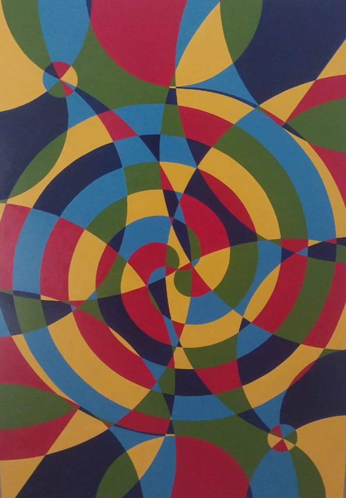
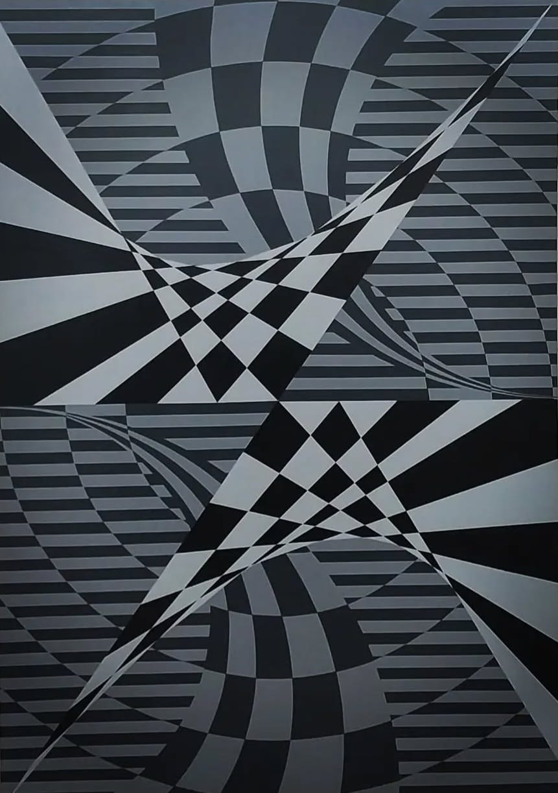
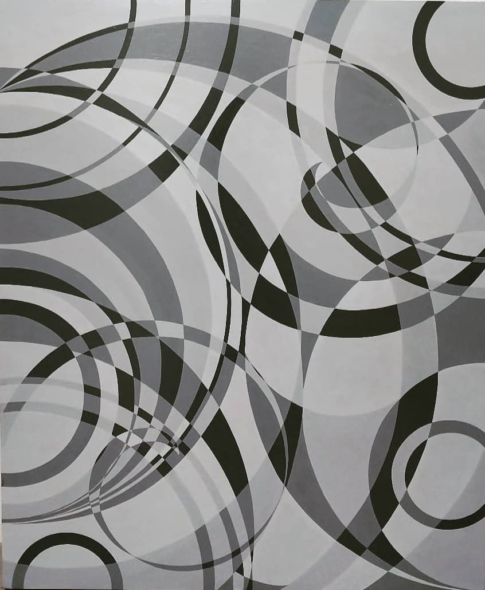
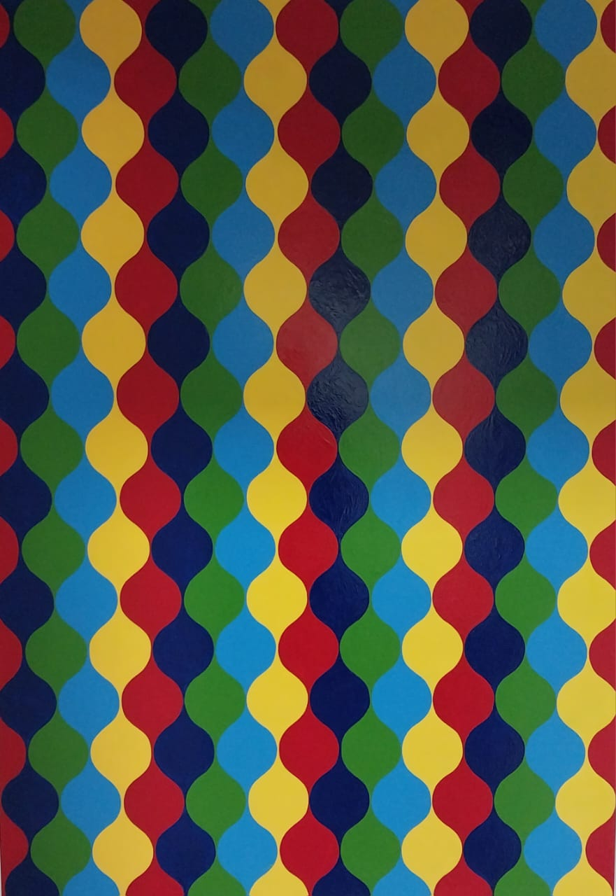

Mis Obras
Colores
Telaraña

Ruta
Circulo

Momentos
Infinito
"Desde que era pequeño, siempre me atrajo la idea de capturar la belleza del mundo a través de mis propios ojos. Pintar a mano me permitió expresar mis pensamientos, emociones y sueños de una manera que las palabras no podían. Cada pincelada es un viaje de autodescubrimiento y una conexión con el arte, lo que me da una sensación única de satisfacción y paz. A lo largo de los años, la pintura a mano se ha convertido en mi lenguaje para comunicar lo que a veces no puedo decir. Cada obra tiene una historia, un pedazo de mi alma."